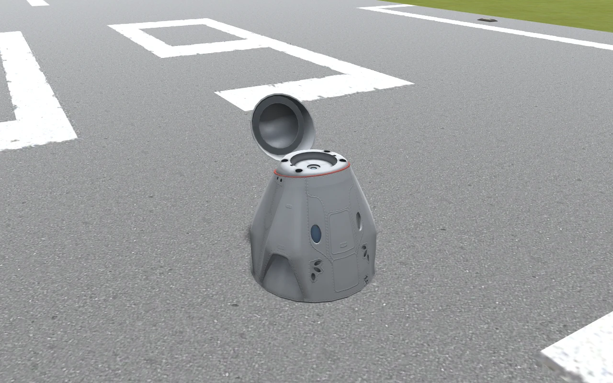
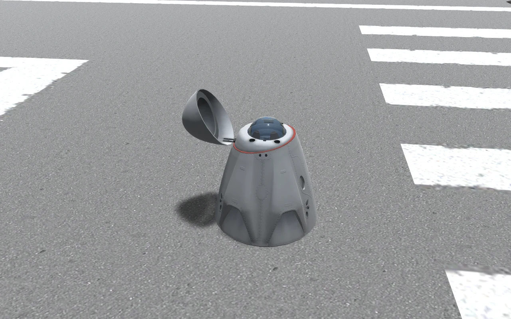
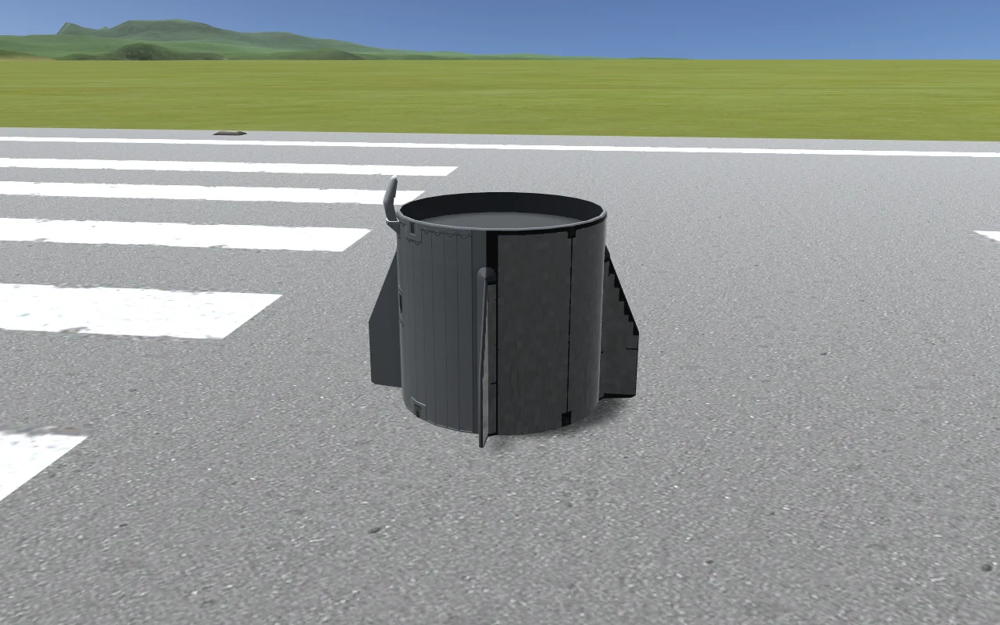

ShineFix home
← Back to supported mods
Tundra Exploration - Stockalike Dragon V2 and Falcon 9
Optics verified
Human tested
Version 7.2.0
Compatibility evidence
Original screenshot gallery
Parts
Rodan Command Pod

Rodan Tourism Command Pod

RVS-42 Unpressurized Cargo Trunk

WK-41 1x4 Solar Array